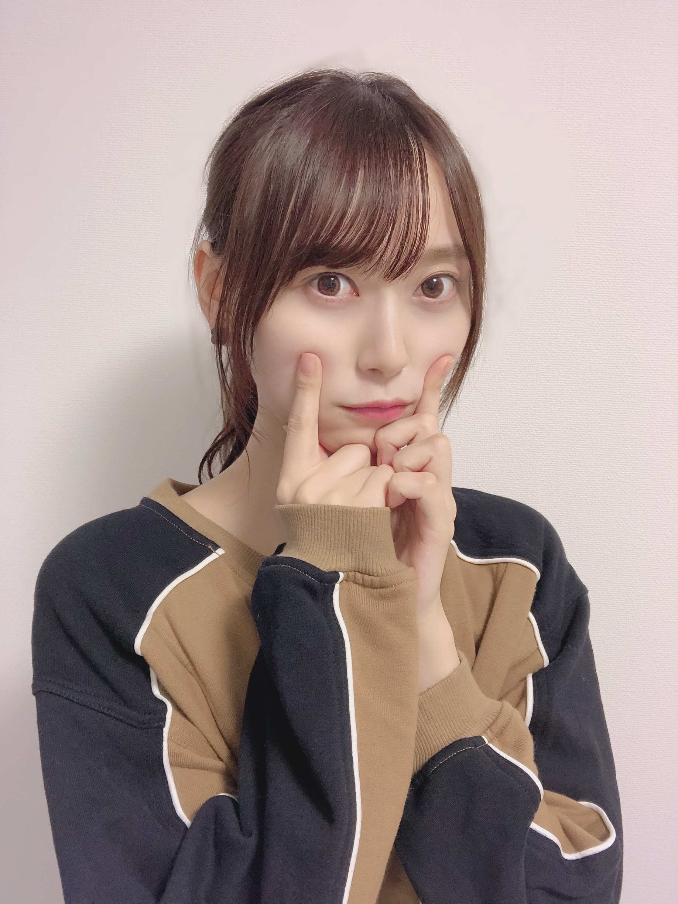
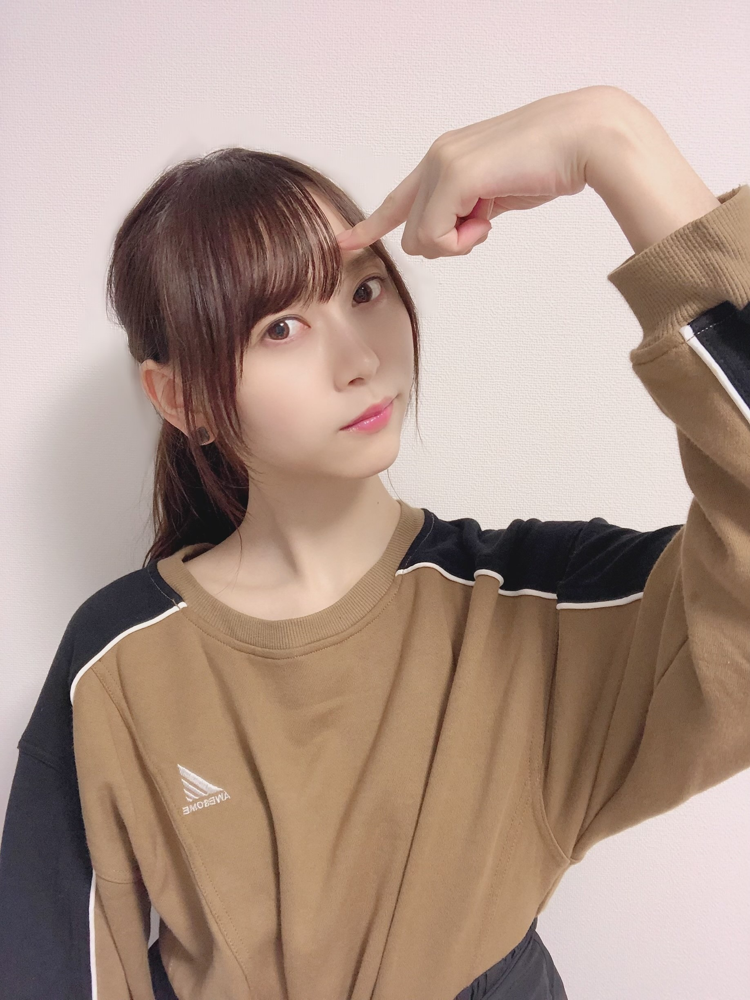

| 2020/09 28 Mon | ポーズ迷走中☺︎弓木奈於 |
こんにちは！
ページをクリックしてくださり、ありがとうございます✨
乃木坂46 新4期生
京都府出身
弓木奈於（ゆみきなお）です( ˶˙ᵕ˙˶ )

コメントで可愛い顔文字を教えていただきました( ˶˙ᵕ˙˶ )
写真のポーズ、何ポーズ...？って思いますよね（笑）
携帯を置いて7秒のタイマースタイルで撮りました☺︎
【1枚目】ピースで撮る
〝もう一回ピース以外で撮ろう〟
【2枚目】
（カウントダウン）7・6・5・・ピース！
〝あ、またピースしてしまった！！
ピンチ、時間が迫ってくる...！〟
3・2・1...！
の結果があの写真です（笑）
でも瑠奈ちゃんが褒めてくれました( ´・ᵕ・ ) ﾔｻｼｲ

うーん...？
皆さん、ポーズを教えてください\(ᯅ̈ )/
---------- ｷﾘｶｴ ---------
❁お返事のコーナー❁
⚫︎肉まんの味でなにがすき？？？
豚まんですԅ(¯﹃¯ԅ)
以前友達とプールに遊びに行く時に、友達が鞄から肉まんを取り出して
「肉まんもらったから半分こしよ！」
と半分分けてくれたんです！！
友達の優しさと相まって、その肉まんは世界で一番美味しく感じました☺︎✨
⚫︎奈於ちゃんはどんな時に秋だなーと感じますか？？
半袖で寒くなったら秋を感じます( ˃ ˂ )
⚫︎弓木さんは北海道に来たことありますか？
小さい頃に家族で行ったことがあります！
とても楽しかった事はおぼろげながら覚えています✨
また絶対に行きたいです⸜(* ॑꒳ ॑* )⸝ ❀
⚫︎なおちゃんは辛いもの得意ですか〜？？？
以前友達が辛いお鍋屋さんに誘ってくれて、行った時の話です...。
私と友達2人で3人だったのですが、2人はその辛いお鍋屋さんによく行っていて、普段は最大級の少し下のレベルを食べているほど辛みに強い2人でした。
でも2人は私に気を遣ってくれて真ん中のレベルにしてくれたのです！
その時の私は、辛みに対して得意、不得意なんて考えた事もなかったので
「真ん中ってことは普通ってことなんだな〜♪」
と口笛を吹きそうな状態でした。
そしてお鍋が到着して、食べ始めると...
〝え、え、なんか辛い...？〟
チラッと友達を見ると、2人は普通に食べています。
〝気のせいか...！〟
と辛みからの逃避を行いますが、お箸のスピードが明らかに減速。
それを見た友達が気を遣ってくれて、
「気遣わんと、いっぱい食べてや〜！はい！」
とよそってくれました。
私に気を遣って普通レベルにしてくれたり、辛みに強い人に憧れていた事もあって、自分自身も辛みに弱いと認めたくなかったり、
辛みによって溢れる涙を必死に堪えて完食させていただきました✨
その日から〝辛みにあまり強くない人〟として生きていく事を決めました。
以上
弓木奈於、辛みとの出会い。でした。
長い（笑）
⚫︎僕の今日の夜ご飯を決めてください(ㅅ´ ˘ `)
ロールキャベツ！かオムライス！(*´˘`*)
...私が食べたいだけ（小声）
⚫︎そろそろ登下校の時に金木犀がふわっと香る時期になってワクワクしてます。朝から落ち着く匂い嗅ぐと元気出ませんか？？？
すごく素敵で、読んでいて想像して幸せな気持ちになりました☺︎
ありがとうございます(*´˘`*)✨
⚫︎筋トレを毎日やってる人をどう思う？
素敵です(*ˊᵕˋ*)！
毎日続ける事って決して簡単な事じゃないし、筋トレはすごくしんどい！！
だから本当に素晴らしくて、私も頑張ろうって思います✨
⚫︎弓木ちゃんって猫舌ですか？？
...はい、とてつもなく( ˊᵕˋ ;)
⚫︎ステーキはしっかり焼く派ですか？それとも少しレア派ですか？
しっかり焼く派です(* ॑ ॑* )⸝♡
⚫︎弓木ちゃんはうなぎ好き？ϵ( 'Θ' )϶ｳﾅｳﾅ
好きですϵ( 'Θ' )϶ｳﾅｳﾅ
⚫︎自分に似合うメイクと自分が好きなメイクが違う時はどっちのメイクをすればいいと思いますか？？( •́ •̀# )
私もすごく同じ気持ちになります( ˃ ˂ )！
私も今研究中なのですが、
〝あ、良いかもしれない♪〟
が見つけられるように
自分に似合うメイク、好きなメイクを「こうした方が理想に近づけるかも...！」「これはどうやってもダメだから違う方法でやってみよう！」
っていっぱい試してみて研究しています( ›_‹ )
是非一緒に頑張りたいです...✨
⚫︎てじなーお！は、さ行、た行、か行ちゃんと言えますか？
言えますよ〜( ｰ̀֊ｰ́ )✧
早口言葉なんかも言えちゃいますよ〜✧
⚫︎目の前に 『ゆみっきー』『勉強』『ゆみっきー』という選択肢があります 。なにを優先するべきですか？
勉強！
と言いたいところなのですが、コメントをくださって、いつも本当に本当に頑張っていらっしゃって『お身体に気をつけてくださいね心から応援しています』と思っています...( ˃ ˂ )！
少しでもお力になれるように、笑顔をお届けできるように、頑張ります！✨
⚫︎ ゆみっきーはショートの時ありました？
...ありました（小声）
お鍋の具材何が好きか沢山教えてくださってありがとうございます☺️
読みながら、すごくお腹が減りました☺︎笑
---------- ｷﾘｶｴ ---------
明日は黒見ちゃんです！
黒見ちゃん、バナナミルク美味しいんだって！（伝言ゲームじゃないよ☺︎笑）
最後まで読んでくださり、ありがとうございました✨

〝てじなーお〟の振りをリクエストしていただいたので、撮ってみました( ∩¨∩ )⚑︎⚐︎
皆さんにとって素敵な一週間になりますように...✨
本日もありがとうございました☺️
コメント(236)
2020/09/28 20:48
コメント(236)
31回目のブログ更新ありがとう！
昨日やっとでカラオケ行けたわ笑
ストレス発散出来ました♫
「夜に駆ける」めちゃくちゃ難しい。
何回歌うのってくらい歌った笑
実は目標があって、人生でカラオケ100点を獲ることなんよね。
自己ベストは99.375なんやけど、一年以上更新出来てない…。というより、99点が一年以上出てないかも…。練習します笑
めちゃくちゃどーでもいいこと言うね笑
最近、カリカリ梅にハマってる( ˙-˙ )
ではでは。また書きます。
ゆみっきーLOVE♡♡
りゅうや
なおちゃんの写真見るとほっこりする
てじなーお 可愛すぎ( * ॑꒳ ॑* )
陸上大会近いから応援して〜笑してくれたら1位取っちゃうもんね！(応援無くても頑張るけどしてくれたらもっと頑張る❤)
中１男子 りょ〜た
今日も可愛い！
てじなーお可愛いすぎます！
僕もすごく猫舌なんですが
どうやったら猫舌じゃなくなるんでしょうね笑
オムライス食べたくなってきました！！
オムライスの卵はふわトロ派ですか？
僕はふわトロ派です！
後僕の家ではオムライスにコーンを沢山入れて食べます！
次回のブログ更新も楽しみにしてまーす！
質問答えてくれてありがとうϵ( 'Θ' )϶ｳﾅｳﾅ
今日ね僕の誕生日なんだけどモバメでメンバーのみんなが祝ってくれてめちゃくちゃ嬉しかった！弓木ちゃんもブログで祝ってくれてたよね！嬉しかったよ！
てじなーお可愛すぎる！握手会で生で見たいなぁ〜
またまた質問！
弓木ちゃんは大阪に来たことがありますか？あったならその時のエピソードを教えて欲しいなぁ
それじゃまた次のブログ更新楽しみにしてます！
いやもうね、どんなポーズしてても可愛いですよ笑
ほんと説明ないとなんのポーズか全く分からないけど笑
僕もこの前写真撮る時があっていろいろポーズしててんけど、JKがやりそうなポーズしてたら女の子たちに違うとご指導頂きました笑
ちなみに下向いてピースするやつです。
もしかして、それももう古い？
てじなーおの振りかわいい！
奈於ちゃんにとっても素敵な1週間になりますように
またブログ更新楽しみにしてます！
(=ﾟωﾟ)ﾉﾎﾅ､ﾏﾀ!!
本当にお顔が可愛すぎて乃木坂の中で1番好きです！！！( ⸝⸝•ᴗ•⸝⸝ )
奈於ちゃんに出会えてよかったな〜って心の底から思いました！(急に重い（笑）)
最近は夜に出ると半袖でも少し肌寒く感じるようになったからもう秋がすぐ目の前まで来てるんだなって実感したよ（笑）
なおちゃんはもう長袖デビューしましたか？？？？
これから寒い季節が来ると思うけど体調管理には気を付けて毎日のお仕事頑張ってください！！(๑•ᴗ•๑)♡
最後に質問です〜
奈於ちゃんがいつも着るお洋服のブランドはどこですか？？？？
参考にしたいのでよかったら教えてください♡
奈於ちゃんこれからもずっとだいすき！！！！はやく会いたいな( ᐢ. ̫ .ᐢ )
♡あみ♡
久しぶりのコメントになっちゃったー笑！
相変わらず可愛いくて限界突破弓木だーー、、
そして何よりブログの書き方が改めて好きです〜♡
ワクワクする読んでると！！！笑
弓木ちゃんにとって今週も良い一週間となりますように！！
弓木ちゃんの選ぶ言葉とか考え方素敵で大好き！！
またコメントしに来ます！！ブログありがとうーー❤︎
なお！
やっほー！
ひろき(Yandji)です☺️
ブログ更新ありがとー！！！
質問タイムー！！！
さくらとのエピソードあったら教えてー！
また、コメントするね！
では、またねー！
ひろき(Yandji)より
最近大学がオンライン授業の為
外に出る習慣があまりなかったので
健康意識がてらジョギングをしています！
奈於ちゃんはどんなポーズでも
スタイルいいから似合うよ〜！
Q秋といえば食もそうですが芸術もあります！
奈於ちゃんは芸術の中で好きな物とかありますか？
書道やってる時心安らぐんだよな〜笑
ポーズがめちゃくちゃかわいい……好き
うーんっていうのもいいねぇ
ポーズな〜
手を耳にするとか？
あ、質問なんだけどもう10月になるじゃん
ハロウィンの仮装をするとしたらどんな仮装がしたい？
握手会があったらそこでしたりするんだろうけどな〜
今年はないもんね
出来ればその仮装してる写真も見たいな（小声）
てじなーおの振りがめちゃくちゃかわいい
これは握手会とかでされたらもうデレデレですわ
それじゃまた5日後に！
じゃあね〜
ワンピース見てる？
もし見てたら好きなキャラと話教えて
あのポーズ、色々考えてみたけど、
11歳ポーズとかどうかな？
年齢聞かれたら、使うとか？
小さい子とか、手で年齢教えてくるから
やる時は、小さい子がやる感じで！
いつも、なおちゃんのブログは
こんな感じで質問してくれるから
とても楽しいなって思うよ！
次のブログも、楽しみにしてるね！
今週も頑張りましょう！
コメント読んでもらえた♪
また北海道来た時は美味しい食べ物食べてください！
待ってました（ ; ; ）今日も1日お疲れ様でした☀︎
もうすっかり秋だね〜〜肌寒い…(ᯅ̈ )
UTB12月号に載るんですか？！！
絶対買います☺️楽しみです✨
質問返したくさんありがとう〜
私も辛いものは苦手…
そんなに辛くない言われるキムチでも
からーい！！なってしまうよ〜笑
口から火吹いてしまうんじゃないかって感じです(？)
お写真ありがとう〜☺️✨
1枚目の写真すごい好きです✊ かわいい✨
お洋服も可愛い〜どこのブランドですか？
では，またコメントするね
体調に気をつけて，お互い1週間頑張りましょ！
いつもありがとう，だいすきです
さっこ
いろんなポーズしてくれてありがとう！！ずっと迷走しててください！（おい）
奈於ちゃんはウナギ好きなのかあ
なんか自分はあまり得意ではなくてですね、、、
今度挑戦してみようかしら。。
ノギスキ楽しみにしてるね！！奈於ちゃんが世界にバレてしまう……？？？
全力で暴れてくれるのを楽しみにしてます笑
今日もありがとね！！
たーくん
〜質問〜
あのー、、、大変恐縮なんですけど〜、、、
…今日のお昼ごはん決めてもらっていいですかぁ？？
コメントする